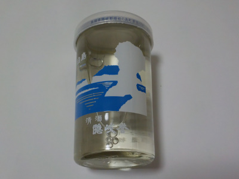
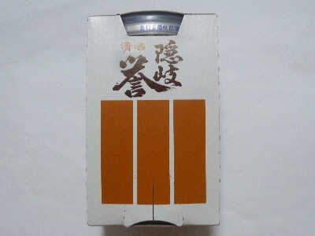
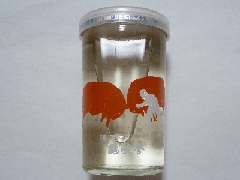
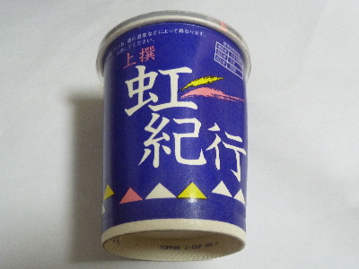
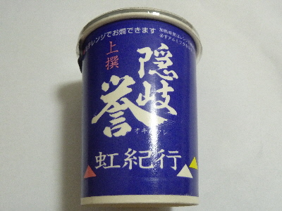

ゴールデンウィークは家で隠岐誉 上撰を飲みました。
2021/05/04

今年も連休は何処にも行かない。
お金を使わないので、ちょっと贅沢に地酒のワンカップを買いました。
隠岐誉 上撰です。 瓶に白島って書いてあるので、白島パッケージかな？
このカップには目盛りが書いてあるので、計量カップとして使えそうです。でも計量カップって普段使わないな。
小麦粉何グラムみたいな重さはきっちり計るんですが、水何CCっていうのはきちんと計らずに適当に入れていました。
次回からこれを使って料理しようかな。
お酒の味はすっきりとした甘さで美味しかったです。
明日もどこかで地酒ワンカップを買って飲もうかな。
隠岐酒造の隠岐誉
2018/08/10
お土産物屋さんで清酒 隠岐誉を買いました。

簡単な包装ですが、外箱があると立派ですね。
旅行のお土産にできそう。

カップのデザインもご当地感があっていいです。何かに利用できるといいんだけど、使い道があまりないんですよね。
味は、酔っててよくわかりませんでした。
日本酒らしい味かな。
隠岐誉の虹紀行
2018/01/02
前に飲んで美味しかったので再び買いました。

嫌なクセがなくで、マイルドな味で美味しかったです。
お正月にカップ酒ってなんか寂しいですね。
とっくりでお酒とか、瓶ビールを自宅で飲むことってないな。
隠岐酒造の虹紀行
2017/06/17
ドンキホーテは色んなものが売ってます。
お土産物もあるし、地酒もあります。

出雲市のドンキホーテですが、隠岐酒造のお酒が置いてありました。
上撰 隠岐誉 虹紀行です。
甘くて、深みのある味でした。美味しかったです。